Learning to Act from Actionless Videos through Dense Correspondences
1. 论文速览
| 阅读定位项 | 内容 |
|---|---|
| 论文要解决什么 | 从少量无动作标注的视频示范中学习可执行机器人策略，避免每个机器人、每个任务都重新收集 action-labeled trajectories。 |
| 作者的方法抓手 | 把“动作”拆成两个可复用中间量：文本条件未来视频和帧间 dense correspondence。视频表示未来状态变化，光流与深度把像素变化还原成 $SE(3)$ 变换。 |
| 最重要的结果 | Meta-World 平均成功率 43.1%，高于 BC-Scratch 16.2%、BC-R3M 15.4%、UniPi 6.1%；iTHOR 平均成功率 31.3%，而两个 BC baseline 只有 2.1% 和 0.4%；Visual Pusher 上从人类推物视频到机器人执行的 zero-shot 成功率为 90% / 40 runs。 |
| 阅读时要注意的点 | 方法并不是端到端从视频直接输出动作，而是强依赖光流、mask、depth、刚体运动假设和手工动作 primitive；真实 Panda 实验附录报告 10 次测试中失败 8 次，需要与主文定性展示一起读。 |
难度评级：★★★★☆。需要同时理解扩散视频生成、光流/dense correspondence、相机投影几何、机器人 motion primitive 和 learning from observation 的实验协议。
核心贡献清单
- 无动作标签动作推断：作者提出用视频帧间 dense correspondences 推断对象或相机的刚体变换，再转成动作，因此目标任务视频不需要动作标注。
- 跨任务、跨环境展示：同一思路用于 Meta-World 桌面操作、iTHOR 导航、Visual Pusher 人类视频到机器人推物，以及 Bridge/Panda 真实机器人设置。
- 高效视频策略建模实现：论文提供视频策略模型代码框架，并通过 U-Net、factorized spatial-temporal block、first-frame conditioning 等设计，在小型环境数据上用 4 张 V100 一天内训练。
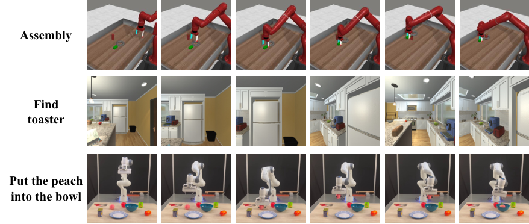
2. 动机
2.1 要解决什么问题
机器人学习的常见瓶颈是状态和动作空间高度依赖 embodiment。折布、倒水、pick-and-place、导航需要的状态表示和动作接口都不同；如果策略学习要求每个任务都有专家动作序列，那么数据采集成本会随机器人和场景数量迅速增加。
作者抓住了视频数据的通用性：RGB 视频可以记录“状态如何变化”，并且互联网上和实验室里都更容易收集。但是视频本身没有告诉机器人应该执行哪条关节轨迹或末端执行器动作。本文的问题就是：能否只从 RGB 视频学到一个可执行策略，在部署时再把视频变化翻译成当前机器人动作。
2.2 已有方法的局限
- 直接行为克隆需要动作标签：BC baseline 可以访问 Meta-World 的 15,216 个和 iTHOR 的 5,757 个 labeled frame-action pairs，但这些标签正是本文方法不使用的数据。
- 视频规划仍缺动作落地：UniPi 类方法把 policy prediction 表述为 text-conditioned video generation，但需要 task-specific inverse dynamics model 从视频反推动作，仍然依赖动作标注。
- 端到端 flow diffusion 不稳：作者尝试直接生成 optical flow，但认为光流场稀疏且缺乏普通图像那样的空间/时间平滑性，扩散模型直接拟合 flow distribution 不如“两阶段：先生成 RGB 视频，再用 GMFlow 估计光流”。
- 计算成本与代码可得性：作者指出最接近的 UniPi 训练成本超过 256 TPU pods，且源代码可得性有限；本文把高保真视频策略训练压到小型数据集上 4 GPU 约一天。
2.3 本文的解决思路
AVDC 的高层思路是“先想象未来，再几何化动作”。给定当前 RGBD observation 和文本目标，模型生成未来 8 帧视频；GMFlow 在相邻生成帧之间输出 dense correspondence；初始深度和相机内参把像素点提升到 3D；最后通过优化恢复对象或场景的刚体变换，并用现成 grasp、push、IK、navigation action mapping 把变换转成动作。
4. 方法详解
4.1 整体 pipeline
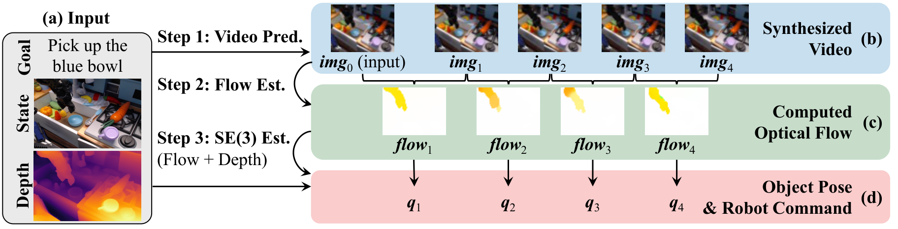
- 视频生成：条件扩散模型学习 $p(\textit{img}_{1:T}\mid \textit{img}_0,\textit{txt})$，实验中 $T=8$。输入当前帧和文本描述，输出未来执行视频。
- 光流估计：用 GMFlow 对每对相邻生成帧预测 optical flow。每个像素的 flow 是 dense correspondence，表示这个点在下一帧移动到哪里。
- 几何恢复：用初始深度图和相机内参把初始像素点转成 3D 点；再找一个刚体变换 $T_t$，使变换后的 3D 点投影位置尽量匹配光流追踪到的 2D 点。
- 动作执行：固定相机场景下，恢复目标物体变换并转成 grasp/push subgoals；导航场景下，把场景变换取逆得到相机/机器人运动，再映射为 MoveForward、RotateLeft、RotateRight 或 Done。
4.2 文本条件视频扩散模型
扩散模型的目标是从初始图像和文本条件下生成未来帧。论文写出的训练损失为：
直觉：模型学习把加噪后的未来视频去噪回来；条件是当前帧和任务文本。
$$ \mathcal{L}_{\mathrm{MSE}} = \left\|\epsilon - \epsilon_\theta\left(\sqrt{1-\beta_t}\,\textit{img}_{1:T} + \sqrt{\beta_t}\,\epsilon,\ t \mid \textit{txt}\right) \right\|^2 . $$| $\textit{img}_0$ | 当前观察帧，作为初始条件。 |
| $\textit{img}_{1:T}$ | 未来 $T$ 帧，实验中 $T=8$。 |
| $\textit{txt}$ | 自然语言任务描述，经固定 CLIP-Text encoder 和 Perceiver pooling 编码。 |
| $\epsilon_\theta$ | 视频 U-Net 去噪网络，用噪声预测训练目标。 |
| $\beta_t$ | 扩散噪声调度；附录说明训练/推理 timesteps=100、beta schedule=cosine、objective=predict_v。 |
架构上，作者从 Dhariwal & Nichol 的图像扩散 U-Net 出发扩展到视频。为增强与初始帧一致性，他们把条件帧 $\textit{img}_0$ 在 RGB 维度拼接到每个未来帧，而不是只在时间轴前面加一帧。ResNet block 内使用 factorized spatial-temporal convolution：先对每个时间步做空间卷积，再对每个空间位置做时间卷积，替代昂贵的完整 3D convolution。
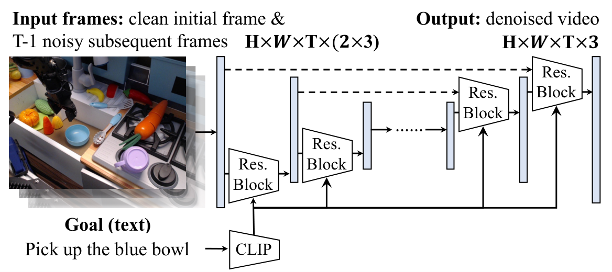
4.3 从光流和深度恢复动作
在固定相机的物体操作任务中，令目标物体初始 3D 点集为 $\{x_i\}$，相机内参为 $K$，$T_t$ 是第 $t$ 帧相对于初始帧的物体刚体变换。投影关系为 $K T_t x_i = (u_t, v_t, d_t)$，对应 2D 点是 $(u_t/d_t, v_t/d_t)$。GMFlow 给出点 $x_i$ 在第 $t$ 帧的追踪像素 $(u_t^i, v_t^i)$，因此作者优化：
这一步只需要初始帧深度，不需要未来帧深度。因为 $T_t$ 被假设为刚体变换，未来 3D 深度通过投影几何隐式确定。
推导补全：为什么这个 loss 足够恢复 $T_t$
初始点 $x_i$ 已经由初始 RGBD 和相机内参确定。给定一个候选刚体变换 $T_t$，可以把 $x_i$ 放到第 $t$ 帧物体坐标下，再经 $K$ 投影到图像平面。光流提供的是同一物理点在生成视频第 $t$ 帧的 2D 位置，因此最小化投影误差就是在找最能解释所有 dense correspondence 的 6DoF 变换。实际实现中，Meta-World 附录先用 RANSAC 从 2D correspondence 中找 inliers，再用这些 inliers 估计 3D 变换 附录: Meta-World setup。
4.4 不同环境中的动作映射
| 环境 | 恢复的几何量 | 动作映射 | 关键实现细节 |
|---|---|---|---|
| Meta-World | 目标物体刚体变换 | 根据垂直位移是否超过 10 cm 选择 grasp 或 push；grasp 模式闭合夹爪后跟随 subgoals，push 模式把机械臂放到可推动方向再跟随 subgoals。 | 采样 $N=500$ 个 mask 点，以物体 centroid 作为 contact point；用 RANSAC 过滤 correspondence outliers 附录: 4.1。 |
| iTHOR | 静态场景变换，取逆得到相机运动 | 观察机器人前方 1m 的 imaginary point：位移小于 1 mm 则 Done，水平位移小于 25 cm 则 MoveForward，否则按方向 RotateLeft/RotateRight。 | 不跟踪单个物体；用整帧 flow，过滤移动出图像的关键点；当 inliers 少于初始采样点 10% 时重规划 附录: iTHOR setup。 |
| Real Panda | 目标物体初始 pose 和目标 pose | 假设目标可 top-grasp 且无需重定向，使用 IK solver 生成机器人轨迹。 | 硬件为 Franka Emika Panda + Intel Realsense D435；附录说明手工指定目标分割，且小物体/低分辨率导致 3D rotation 不稳 附录: real-world setup。 |
4.5 训练和推理要点
5. 实验
5.1 Baselines 和 variants
| 方法 | 训练信号 | 作用 |
|---|---|---|
| BC-Scratch | 使用专家动作标签，从头训练 ResNet-18 + CLIP text + MLP。 | 衡量常规行为克隆在多任务设置下的难度。 |
| BC-R3M | 同样使用动作标签，但视觉 backbone 初始化为 R3M。 | 测试机器人预训练视觉表征是否帮助动作预测。 |
| UniPi baseline | 使用 AVDC 生成的视频，再训练 inverse dynamics model 输出动作。 | 代表“视频计划 + 学习式逆动力学”的路线，仍需要动作标签。 |
| AVDC (Flow) | 直接预测帧间 optical flow。 | 验证直接生成 flow 是否优于先 RGB 视频再 GMFlow。 |
| AVDC (No Replan) | 完整几何动作恢复，但 open-loop 执行。 | 验证闭环 replanning 的作用。 |
| AVDC (Full) | RGB 视频生成 + GMFlow + 几何动作恢复 + replanning。 | 论文主方法。 |
5.2 Meta-World 桌面操作
设置：11 个 Sawyer 机械臂操作任务，每个任务 3 个相机位，每个相机位 5 条 demonstrations，总共 165 个视频。方法和 variants 使用 ground-truth target object segmentation mask；BC baseline 使用动作标签。评估为每个任务、每个相机位 25 个 seeds 的平均成功率。
| 方法 | Overall | 关键现象 |
|---|---|---|
| BC-Scratch | 16.2% | 即使有 15,216 个动作标签，多任务泛化仍弱。 |
| BC-R3M | 15.4% | R3M 初始化未改善整体结果。 |
| UniPi (With Replan) | 6.1% | 需要 inverse dynamics，整体低于 BC。 |
| AVDC (Flow) | 13.7% | 在 button-press-topdown、faucet-close、handle-press 上有表现，但多数任务很差，支持作者“两阶段”设计。 |
| AVDC (No Replan) | 19.6% | 已超过 BC，但明显低于闭环版本。 |
| AVDC (Full) | 43.1% | 在 11 个任务中整体最好；door-open 72.0%、door-close 89.3%、handle-press 81.3%。 |
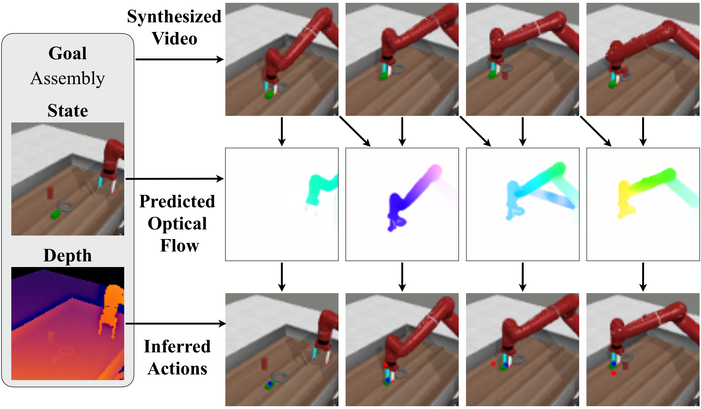
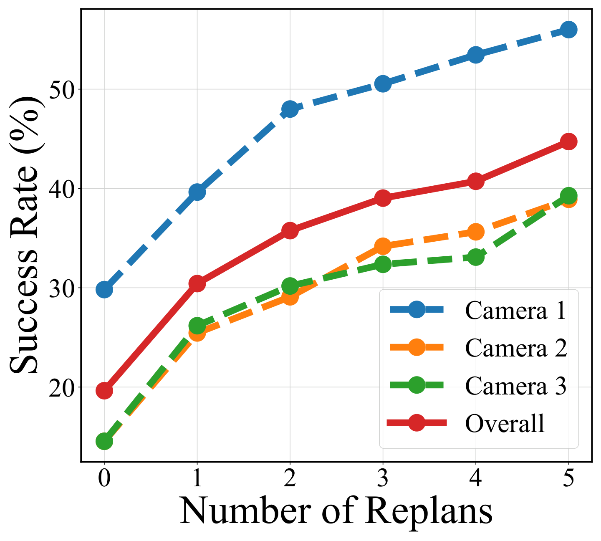
5.3 iTHOR 目标导航
设置：12 个目标物体，分布在 4 类房间；每个时间步可执行 MoveForward、RotateLeft、RotateRight、Done。成功标准是目标物体进入视野并在 1.5m 内，或在正确状态预测 Done。每个房间 3 种物体，每物体 20 episodes。
| Room | BC-Scratch | BC-R3M | AVDC |
|---|---|---|---|
| Kitchen | 1.7% | 0.0% | 26.7% |
| Living Room | 3.3% | 0.0% | 23.3% |
| Bedroom | 1.7% | 1.7% | 38.3% |
| Bathroom | 1.7% | 0.0% | 36.7% |
| Overall | 2.1% | 0.4% | 31.3% |
作者解释：BC-R3M 比 BC-Scratch 更差，可能因为 R3M 预训练在机器人操作任务上，对视觉导航不适合。AVDC 的中间视频可以显示 agent 导航到目标，光流再容易映射为移动或旋转；无 flow 时表示已经找到目标并选择 Done。
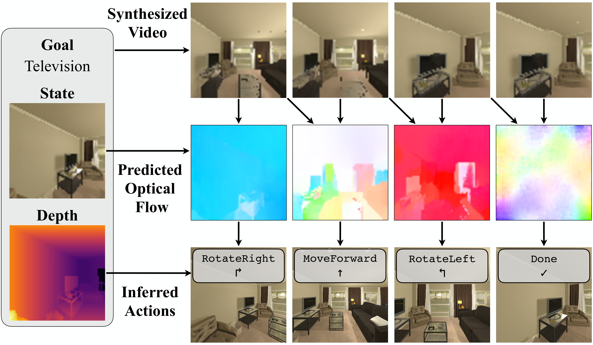
5.4 跨 embodiment：人类视频到机器人推物
Visual Pusher 实验只用 198 个 actionless human pushing videos 训练视频扩散模型，U-Net 架构与 Meta-World 相同，训练 10k steps；随后在模拟机器人 pushing 任务上 zero-shot 测试，不做 fine-tuning。结果是 40 次运行中 90% 成功率。
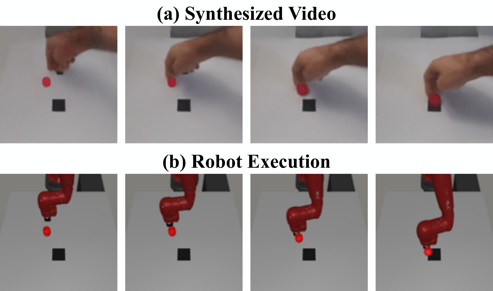
5.5 Bridge 到真实 Franka Panda
Bridge 数据集含 33,078 条 WidowX 250 厨房任务 teleoperation videos，无深度。作者先用 Bridge 训练视频生成模型，再在自己的真实桌面环境中用 20 条人手示范视频 fine-tune。真实设置使用 Franka Emika Panda 和固定安装的 Intel Realsense D435 RGBD camera。
主文强调模型能生成视频、预测光流、识别目标并推断动作；附录给出更具体失败分析：真实实验 10 次测试中失败 8 次，失败原因 75% 来自 video diffusion model 生成错误 plan（选错物体或放错目标），25% 来自生成视频不连续，例如中间帧物体消失 附录: real-world failure mode。
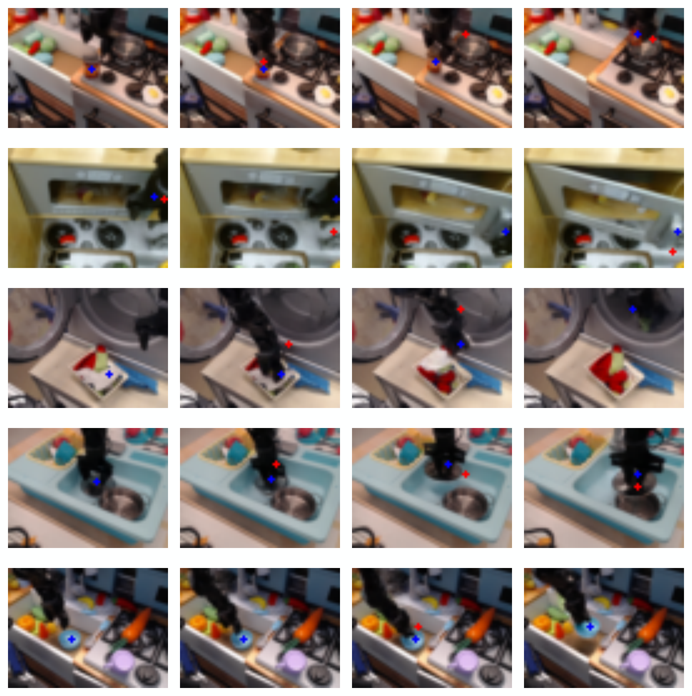
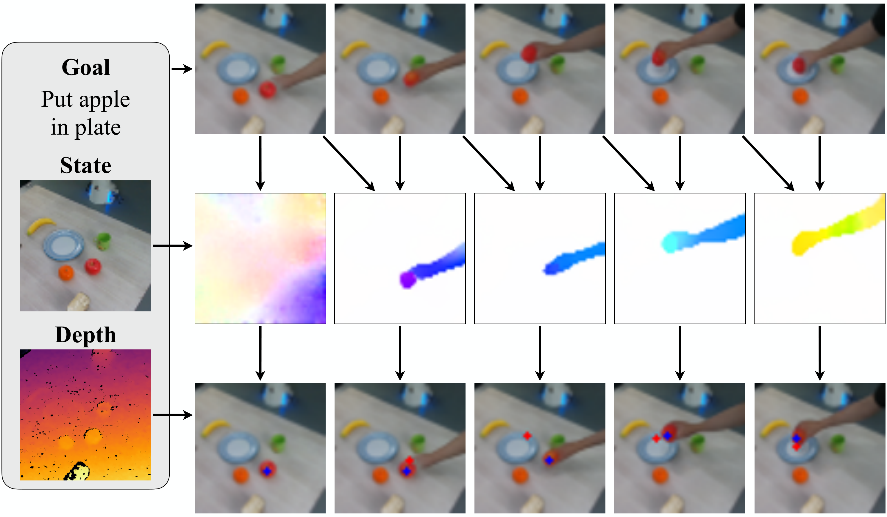
5.6 附录补充实验
| 附录内容 | 结果 | 含义 |
|---|---|---|
| Object mask with segmentation models | 用 Language Segment-Anything 替代 GT mask，在 Meta-World 11 任务平均成功率 34.5%，比 GT mask 的 43.1% 低 8.6 个百分点。 | 方法对分割质量敏感；论文主结果在 Meta-World 使用 GT mask。 |
| First-frame conditioning | cat_c 在 Bridge 训练早期的最后帧 MSE 低于时间维度拼接 cat_t；每个点为 4000 samples 平均值，误差条为 standard error。 | RGB channel-wise conditioning 是效率设计的一部分。 |
| Text encoder | CLIP-Text 63M 与 T5-base 110M 的视频生成 MSE 差异不显著。 | 文本编码器不是主要瓶颈；作者使用固定 CLIP-Text + Perceiver。 |
| Bridge zero-shot real scenes | Bridge 模型在 toy kitchen 外的复杂真实厨房图像上能生成合理视频，但原分辨率 48x64，视频较模糊。 | 视频生成模型有一定场景迁移，但低分辨率会影响动作恢复。 |
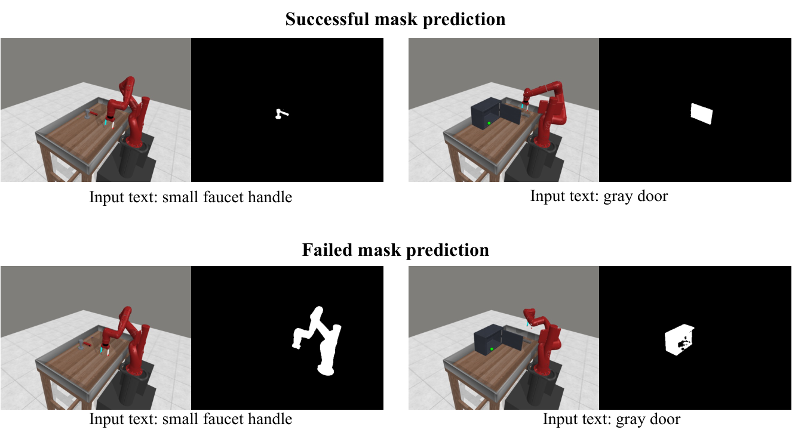
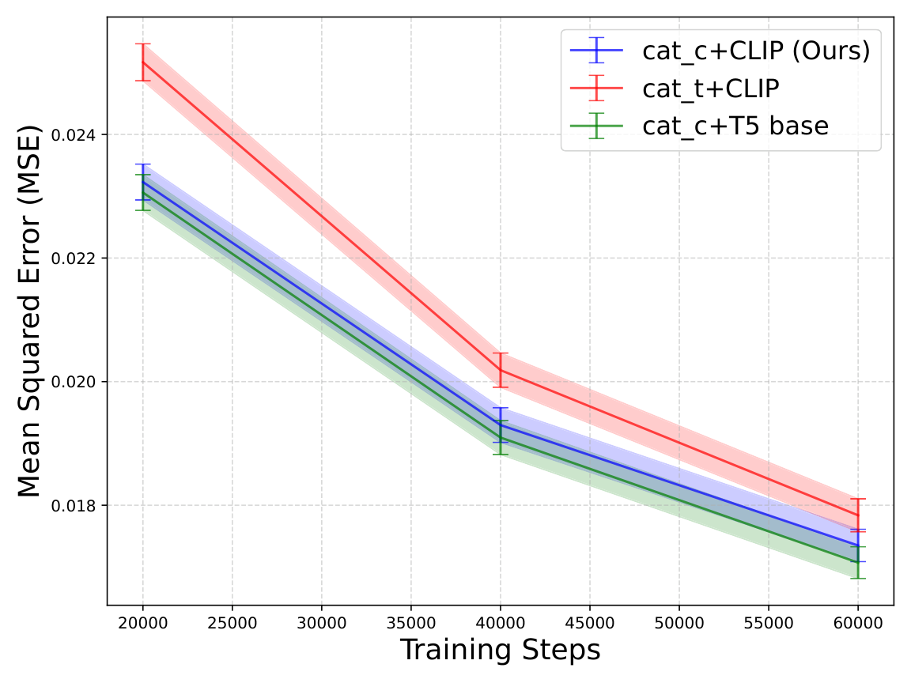
6. 复现信息汇总
6.1 数据与评估协议
| 场景 | 训练数据 | 评估 |
|---|---|---|
| Meta-World | 11 tasks x 3 cameras x 5 demonstrations = 165 videos；BC baseline 使用 15,216 frame-action pairs。 | 每任务、每相机位 25 seeds，报告平均成功率。 |
| iTHOR | 240 videos；BC baseline 使用 5,757 frame-action pairs。 | 12 object navigation tasks，4 room types，每物体 20 episodes。 |
| Visual Pusher | 198 human pushing videos，无动作标签；训练 10k steps。 | 模拟机器人 pushing，zero-shot，无 fine-tuning，40 runs。 |
| Bridge/Panda | Bridge 33,078 WidowX videos；真实环境再 fine-tune 20 条人手示范。 | 真实 pick-and-place 桌面任务，附录提供 10 trials failure analysis。 |
6.2 模型超参
所有模型公共设置：dropout=0，num_head_channels=32，train/inference timesteps=100，training objective=predict_v，beta_schedule=cosine，loss_function=l2，min_snr_gamma=5，learning_rate=1e-4，ema_update_steps=10，ema_decay=0.999 附录: Video Diffusion Model。
| 参数 | Meta-World | iTHOR | Bridge |
|---|---|---|---|
| num_parameters | 201M | 109M | 166M |
| resolution | 128 x 128 | 64 x 64 | 48 x 64 |
| base_channels | 128 | 128 | 160 |
| num_res_block | 2 | 3 | 3 |
| attention_resolutions | 8, 16 | 4, 8 | 4, 8 |
| channel_mult | 1, 2, 3, 4, 5 | 1, 2, 4 | 1, 2, 4 |
| batch_size | 16 | 32 | 32 |
| training_timesteps | 60k | 80k | 180k |
6.3 Perceiver 文本聚合器
| Parameter | Value |
|---|---|
| layers | 2 |
| num_attn_heads | 8 |
| num_head_channels | 64 |
| num_output_tokens | 64 |
| num_output_tokens_from_pooled | 4 |
| max_seq_len | 512 |
| ff_expansion_factor | 4 |
6.4 硬件与时间
- 训练硬件：4 x V100 32GB。Meta-World 约 24 小时训练 165 videos；iTHOR 约 24 小时训练 240 videos；真实实验约 48 小时 Bridge pretraining + 4 小时 human-data fine-tuning。
- 推理硬件：RTX 3080Ti。Meta-World 单轮 planning 中，video generation 约 10.57s，flow prediction 每对帧约 0.28s，action regression 约 1.31s，action execution 约 1.53s。
- 代码：论文附录说 supplementary zip 中包含
./codebase_AVDC；项目页提供 GitHub 仓库 flow-diffusion/AVDC。
tmp/arxiv_source_2310.08576/；PDF 在 tmp/2310.08576.pdf；源压缩包在 tmp/arxiv_source_2310.08576.tar.gz；报告图表在 Report/2310.08576/figures/。这些临时材料暂未删除，便于继续核对。
7. 分析、局限与边界
7.1 这篇论文最有价值的地方
按论文自己的实验与方法设计，最核心的价值是把“无动作标签视频”到“可执行动作”之间缺失的一环显式拆出来：视频模型只负责生成未来视觉状态，dense correspondence 和几何优化负责把状态变化转换为可执行变换。这个拆分让方法能使用 RGB-only demonstrations 训练，同时把动作恢复交给 depth、flow、mask、IK、motion primitive 等较成熟模块。
7.2 结果为什么站得住
结果的支撑主要来自三个层面。第一，Meta-World 表格包含多个动作标签 baseline 和多个 AVDC variants，Full 版本比 No Replan 和 Flow 版本都高，支持“replanning + 两阶段 RGB-to-flow”设计。第二，iTHOR 任务换成导航，动作空间和物体操作完全不同，但同一个 correspondence-to-transform 逻辑仍能超过两个 BC baseline。第三，附录 ablation 暴露了分割、first-frame conditioning、DDIM 步数等工程变量的影响，没有只报告主方法成功案例。
7.3 作者自述局限
- 遮挡：机器人手臂遮住物体大部分区域时，算法可能丢失物体 track。
- 光流脆弱性：快速光照变化或大幅姿态变化会让 optical flow prediction 失效。
- 接触信息缺失：真实 manipulation 需要 grasp 或 contact surface，而这些信息不能直接从不同人手和机器人手的视频中转移。
- 力信息缺失：RGB 视频没有 force information，作者建议未来用真实交互学习或 fine-tuning 来补足。
- 真实实验失败：附录报告真实 Panda 10 次测试失败 8 次，其中 75% 由于视频模型计划错误，25% 由于生成视频不连续。
7.4 适用边界
| 适合使用的情况 | 不适合或需要额外模块的情况 |
|---|---|
| 任务的关键变化可近似为物体或相机的刚体变换。 | 柔性物体、复杂接触、强力控任务或必须推断接触 surface 的任务。 |
| 部署时能获得初始深度，或者可用单目深度估计替代。 | 没有可靠深度、相机标定或物体/场景 mask 的环境。 |
| 语言目标和视觉变化之间关系清晰，例如 pick up fruit、navigate to object、push object。 | 目标需要隐藏状态、长期多阶段符号规划或非视觉反馈。 |
| 可以接受十秒级 planning latency，或使用 DDIM 等采样加速。 | 实时强约束控制任务；即使用 DDIM 10 步仍会牺牲部分成功率。 |